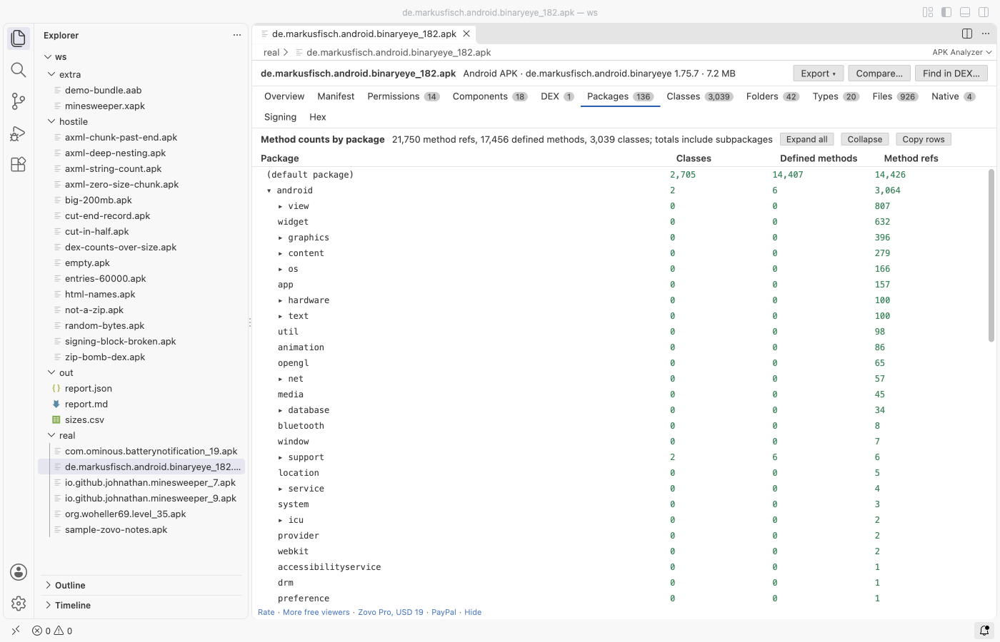

Open files in VS Code and Cursor / Binary, network and hardware
Count the DEX methods of an APK, by package
The 64K limit is 65,536 method references per DEX file, and calls into Android and library methods count too. APK Analyzer reads every classes*.dex in an APK and shows each file's method references as a share of that limit, plus a tree of method counts per package. It needs no Android Studio, SDK or Java, and all of it is free. Zovo Pro (USD 19 once) adds Find in DEX, which searches every DEX file for a class, method, field or string, with 3 free tries.
Free, MIT license. Extension ID zovo.zovo-apk-analyzer, version 0.1.0. Needs VS Code 1.90.0 or newer.

Steps in VS Code
- Install APK Analyzer from the Marketplace, or press Ctrl+P (Cmd+P on macOS) and run
ext install zovo.zovo-apk-analyzer. - Click the
.apkfile in the Explorer. The Overview shows the method references of the fullest DEX file as a bar against 65,536. - Open the DEX tab. Each
classes*.dexhas its version, classes, defined methods, method references and a "% of 65,536" column, plus field, string, type and prototype counts. - Open the Packages tab for method counts as a tree. Each package shows its classes, defined methods and method references, with its subpackages included. Expand all and Collapse open or close the tree.
- Click Copy rows to put every package with its counts on the clipboard as tab-separated text, ready for a spreadsheet.
- Open the Classes tab and sort by Methods to find the biggest classes, with their package, field count, access flags, superclass and DEX file.
Where Zovo Pro saves time
The DEX, Packages and Classes tabs, the manifest, permissions, sizes and signing are free, with no limit and no sign-in. The DEX files are read in a worker thread, and every count is checked against the bytes that are really in the file.
When a count is higher than you expect, Find in DEX shows where a class, method, field or string sits across every DEX file of the APK, as plain text or a /regex/. The other two Pro tools compare two APKs, with the method references per package before and after, and export the method count table as CSV or the whole report as JSON or Markdown.
With Find a class, method or string in the DEX files (Zovo Pro)
- Click Find in DEX... at the top of the viewer, or run "APK Analyzer: Find a class, method or string in the DEX files (Pro)".
- Type a name such as
okhttp3, or a/regex/. - A try is used only when the tool gives you its result.
Find a class, method or string in the DEX files works 3 times on your computer before it asks for a license, and a try counts only when you get a result. Opening a file shows no popup and no countdown.
Zovo Pro costs USD 19 once. It is not a subscription, and it turns on the Pro tools in every Zovo extension, not only APK Analyzer. After a card payment (Stripe) your license key shows on the next page. In VS Code, run "Zovo Pro: Enter Zovo Pro license key" from the Command Palette and paste it. The key is checked on your computer, with no network call. With GitHub Sponsors, pick the "$19 one time" tier, then run "Zovo Pro: I already paid: unlock with GitHub Sponsors" and sign in with the same GitHub account. With PayPal, send USD 19 with "Zovo Pro" in the note and the key comes by email within a day.
A team of 5: USD 59 once, by card or by PayPal. Every rule and every Pro tool is on the Zovo Pro page.
Steps in Cursor, Windsurf or VSCodium
- Open the Extensions view with Ctrl+Shift+X (Cmd+Shift+X on macOS).
- Search for
zovo.zovo-apk-analyzerand click Install. Cursor, Windsurf and VSCodium install from Open VSX, where it is published aszovo/zovo-apk-analyzer. - If your editor has no gallery, download the .vsix from the Open VSX page and run "Extensions: Install from VSIX...".
- Then use it the same way as in VS Code.
What APK Analyzer handles
- APKs with one or many
classes*.dexfiles. - DEX counts in
.aabbundles, and in the base APK of an.apksor.xapkset. - Defined methods and method references side by side, so you can tell your own code from calls into other code.
- A DEX file over the limit, which gets a warning with its count.
What it does not do
- One DEX file is read up to 128 MB unpacked, and all DEX files together up to 768 MB. Only the first 200 DEX files are read.
- It counts methods and classes. It does not show bytecode or decompile classes.
- Files on remote or virtual file systems are read up to 256 MB.
Other options
- APK Analyzer in Android Studio. Free. It lists each DEX file with its defined and referenced methods. It needs the full Android Studio install.
- apkanalyzer. A command-line tool in the Android SDK.
apkanalyzer dex references app.apkprints the method reference count of each DEX file.
Install counts and Open VSX status were checked on 13 November 2026. Descriptions in quotes are the extensions' own.
Questions
What counts toward the 64K limit?
Method references, so every method a DEX file defines or calls, including calls into Android and libraries. That is why the android package shows method references but no classes.
Do I still need to worry about multidex?
With minSdk 21 or higher, Android loads several DEX files on its own, so the limit applies to each file and not to the whole app. The DEX tab shows each file on its own row.
Is it free?
Yes. Every count and every tab is free, with no sign-in. Compare, export and Find in DEX are Zovo Pro tools with 3 free tries each.
Does it work in Cursor or Windsurf?
Yes. Cursor, Windsurf and VSCodium install extensions from Open VSX. Search for the extension in their Extensions view and install it there.
More about APK Analyzer
Read the APK Analyzer page for every feature and setting, or the source code on GitHub.
Related guides
- Compare two APK files in VS Code
- Read the AndroidManifest.xml and permissions of an APK
- Use a hex editor in VS Code
- Open a binary file in VS Code
Zovo Pro and support
Zovo Pro: USD 19 once, every Zovo viewer. It turns on the Pro tools in this extension and in the other Zovo extensions you use. The free features stay free.
After a card payment your license key shows on the next page. Paste it with the command "Zovo Pro: Enter a key".
You can also support the work with no Pro:
Need your format supported?
Open a format request with a sample file, and I reply there whether it can be done. For USD 299 once, through this GitHub Sponsors tier, I add your file format or a missing feature to this extension, with tests, within 7 days.